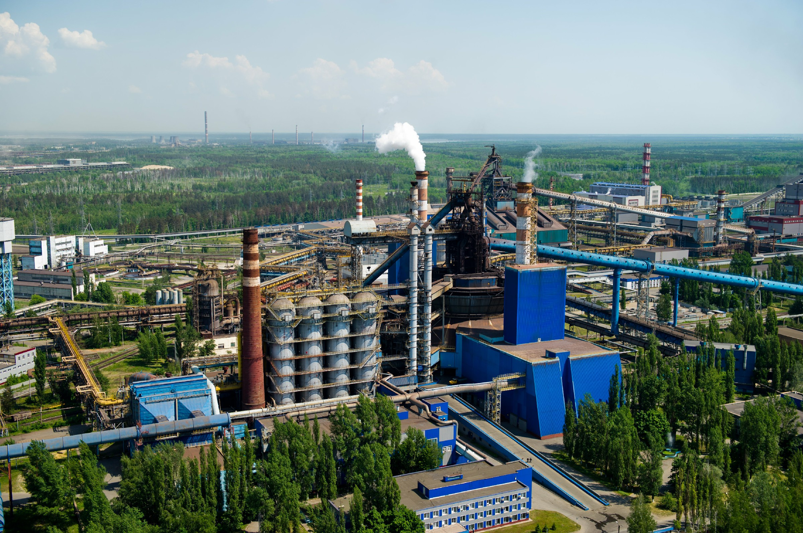
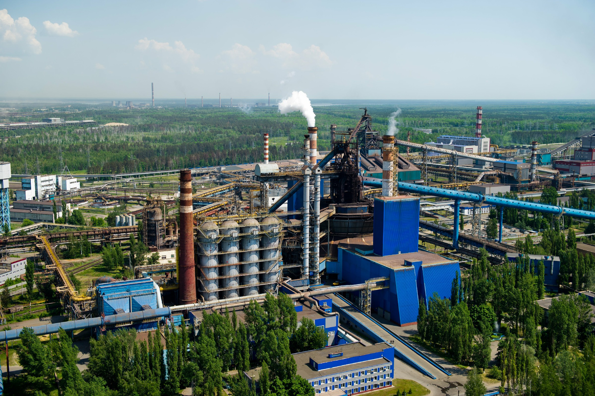

Кратковременная остановка доменной печи (без зажигания газа на колошнике) со взятием на тягу при
нормальном режиме работы печи.
Пуск печи после кратковременной остановки. Печь находится в режиме "тяга" через
трубу.
Действия в случае аварийных
ситуаций
Пожар (воспламенения природного газа высокого давления на цеховом
коллекторе)
Не закрывается пылевой затвор/клапан выгрузки пыли пылеуловителя
Разрыв брони воздухонагревателя, находящегося в режиме дутье с выбросом
раскаленных огнеупоров
Документы
Нормативные ссылки
Эксплуатация доменной печи № 6 производится в соответствии сТИ 05757665-ДЦ2-09;
Эксплуатация доменной печи № 7 производится в соответствии сТИ 05757665-ДЦ2-07;
Эксплуатация пылеуловителей и газопровода грязного доменного газа ДП-б производится в
соответствии с ИЭ
05757665-Р1-002-0320;
Эксплуатация циклона и газопровода грязного доменного газа производится в соответствии с ИЭ
05757665-Р1-002-0082;
Эксплуатация Газоочисток № 4 и № 5 производится в соответствии с ИЭ 057575665-052-Р1- 0437 и ИЭ
057575665- Р1-0293, соответственно.
Нормативные документы
- Настоящая инструкция;
- ИОТ 05757665-Н5Е-116-0805 Инструкции по охране труда для работников комбината (общая);
- Инструкция по охране труда (по профессии);
- ИОТ 05757665-Р1-002-0807 Бирочная система ДЦ-2;
- ИОТ 002-027 Инструкция по охране труда по очистке и ремонту оборудования;
- ИОТ 05757665-Н5Е-116-0616 Инструкция по охране труда при проведении газоопасных работ в
структурных
подразделениях;
- Организация и безопасное проведение газоопасных работ в структурных подразделениях ПАО «НЛМК»
СУОТиПБ
05757665-4.6-011;
- ИОТ 002-051 Инструкция по охране труда для работников ДЦ-2 при ремонтных работах;
- ИПБ 05757665-Р1-002-0075 Инструкция о мерах пожарной безопасности;
- ИОТ МКО-213-0192 «Инструкцией по охране труда о порядке применения бирочной системы»;
- Производственно-техническая инструкция (по профессии);
- Должностная инструкция (по профессии);
- Правила внутреннего трудового распорядка работников ПАО "НЛМК";
- Положения о Системе управления промышленной безопасностью и охраной труда в ПАО "НЛМК";
- СТП СУОТиПБ 05757665-5.3-001 «Система управления охраной труда и промышленной безопасностью
ПРОВЕДЕНИЕ ПРОВЕРОК. РАССЛЕДОВАНИЕ ПРОИСШЕСТВИЙ, НЕСООТВЕТСТВИЯ, КОРРЕКТИРУЮЩИЕ И ПРЕДУПРЕЖДАЮЩИЕ
ДЕЙСТВИЯ.
Расследование и учет несчастных случаев в ПАО «НЛМК»»
- ПМЛА 05757665-002-000 План мероприятий по локализации и ликвидации последствийаварий;
- ИЭ 05757665-Р1-002-0003 Инструкция по эксплуатации. Ремонт и ревизия газопроводов;
- ИЭ 05757665-РЕ-002-0063 Инструкция по эксплуатации. Технологических трубопроводов ДЦ-2;
- ИЭ 05757665- РЕ-002-0008 Инструкция по эксплуатации блока воздухонагревателей ДП-7 Доменного
цеха №2;
- ИЭ 05757665-РЕ-002-0154 Инструкция по эксплуатации блока воздухонагревателей ДП-6 Доменного
цеха №2;
- ИЭ 05757665- РЕ-002-0082 Инструкция по эксплуатации трубопровода грязного доменного газа и
циклона
доменной печи №7 Доменного цеха №2;
- ИЭ 05757665-РЕ-002-0320 Инструкция по эксплуатации трубопровода грязного доменного газа и
пылеуловителя доменной печи № 6 Доменного цеха N22;
- ИЭ 05757665- РЕ-002-0033 Инструкция по эксплуатации газосмесительной станции доменной печи №7
Доменного цеха №2;
- ИЭ 05757665-РЕ-002-0149 Инструкция по эксплуатации газосмесительной станции доменной печи N2 6
Доменного цеха N22;
- ИЭ 05757665- РЕ-002-0085 Инструкция по эксплуатации кольцевых зазоров доменной печи N27
Доменного цеха
N22;
- ИЭ 05757665-РЕ-002-0172 Инструкция по эксплуатации кольцевых зазоров доменной печи N2 6
Доменного цеха
N2 2;
- ИЭ 05757665- РЕ-002-0007 Инструкция по эксплуатации газопровода чистого доменного газа
доменной печи
N27 Доменного цеха N22;
- ИЭ 05757665-РЕ-002-159 Инструкция по эксплуатации газопровода чистого доменного газа доменной
печи N2
6 Доменного цеха N22;
- ИЭ 05757665- РЕ-002-0036 Инструкция по эксплуатации газопровода природного газа высокого
давления
доменной печи №7 Доменного цеха N22;
- ИЭ 05757665-РЕ-002-0004 Инструкция по эксплуатации газопровода природного газа высокого
давления
доменной печи N2 6 Доменного цеха N22;
- ИЭ 05757665- РЕ-002-0023 Инструкция по эксплуатации станции подачи воздуха горения доменной
печи N27
Доменного цеха N22;
- ИЭ 05757665-Р1-002-0140 Инструкция по эксплуатации станции подачи воздуха горения доменной
печи № 6 Доменного цеха № 2;
- ИЭ 05757665- РЬ002-0029 Инструкция по эксплуатации. Система загрузки ДП-7 Доменного цеха №2;
- ИЭ 05757665-Р1-002-0204 Инструкция по эксплуатации. Система загрузки ДП-6 Доменного цеха №2;
- Перечень опасностей и рисков Доменного цеха №2;
- Перечень газоопасных работ, выполняемых в Доменном Цехе №2;
- Перечень газоопасных мест;
- Цвета сигнальные, знаки безопасности, разметка сигнальная;
- Схема маршрута движения персонала;
- Кардинальные правила безопасности группы НЛМК;
- Требования по охране здоровья граждан от воздействия окружающего табачного дыма и ограничению
курения
в ПАО «НЛМК»;
- Трудовой кодекс РФ. Ст. 227-231.
Требования к хранению
инструкции
Наполнить
Ответственность
Наполнить
Оборудование
Состав оборудования
Трубопровод холодного дутья с оборудованием:
- клапан «СНОРТ»;
- смесительно-предохранительный клапан № 002;
- дроссель регулятор № 001 ⌀ 900 мм;
- дроссель регулятор № 001а ⌀ 500 мм.
Воздухопровод горячего дутья с оборудованием:
- клапан горячего дутья № 19 ⌀ 1600мм;
- клапан взятия печи на тягу № 022 ⌀ 1300мм.
Оборудование доменной печи и газопроводов грязного доменного газа:
- атмосферные клапаны ⌀ 630мм. № 1, №2 (с дросселем-регулятором), № 3 с гидравлическим приводом;
- атмосферный клапан ⌀ 250мм. нисходящего газопровода с ручным приводом (для сброса давления
газа под колошником в случаеневозможности открыть атмосферные клапана № 1, 2, 3);
Оборудование БЗУ и газопровода получистого доменного газа на выравнивание давления:
 
